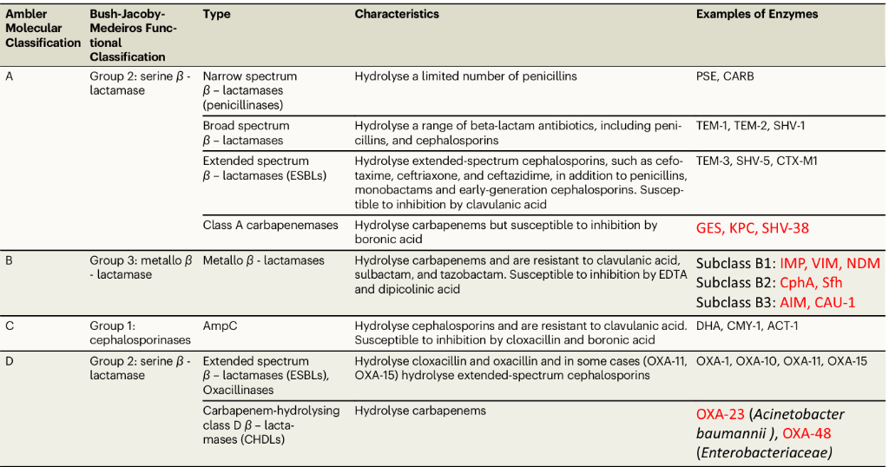
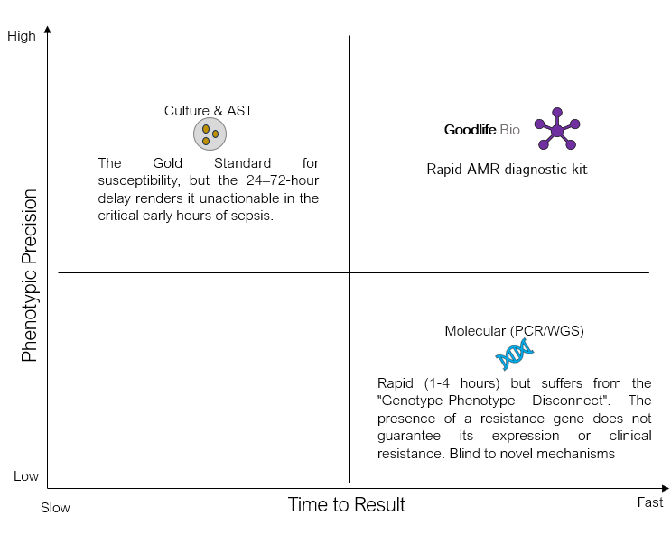
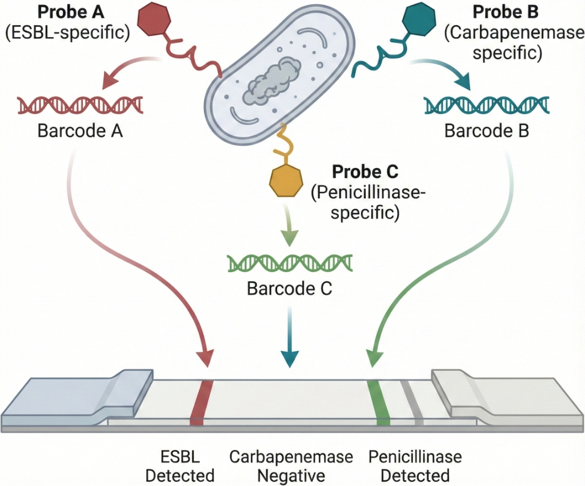
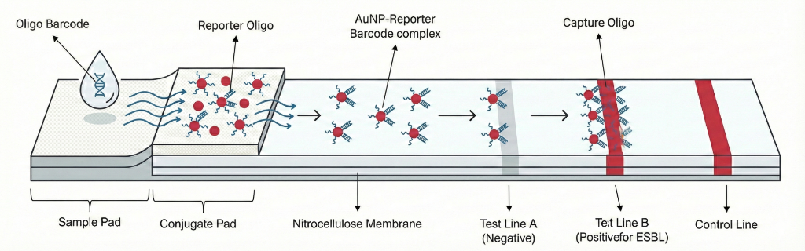

One of our first targets is Antimicrobial Resistance (AMR) - a global health challenge that threatens the effectiveness of modern medicine.
Source: https://doi.org/10.1038/nmicrobiol.2016.187
Global Research on Antimicrobial Resistance (GRAM) project recently estimated that drug-resistant infections directly caused 1.14 million deaths in 2021, a figure projected to rise to 1.91 million annually by 2050, resulting in a cumulative loss of 39 million lives and a potential global economic contraction of $1.7 trillion. Antibiotic-resistant infections pose a critical global health challenge, and India is its epicenter compounded by the misuse of broad-spectrum antibiotics due to slow diagnostics. Traditional antimicrobial susceptibility testing (AST) via culture requires 1-7 days, forcing empirical treatment that is often inaccurate (<50% appropriate). This delay and mismatch in therapy drive the emergence of "superbugs". β-lactamases are the enzymes produced by certain resistant microbes that hydrolyze the β-lactam ring of β-lactam antibiotics like penicillins, cephalosporins, monobactams, and carbapenems - are among the most prevalent resistance mechanisms. They render our most vital antibiotics ineffective, including third-generation cephalosporins and even last-resort carbapenems. β-lactamases are classified into four major Ambler classes (A-D), corresponding to broad-spectrum (penicillinases), extended-spectrum (ESBLs), AmpC cephalosporinases, and carbapenemases. Rapid identification of the specific β-lactamase subtype present in an infection is crucial for personalized antibiotic therapy - for example, distinguishing a simple penicillinase (treatable with augmentin) from an ESBL (requiring a carbapenem) or a metallo-carbapenemase (calling for polymyxins or novel combos). Current phenotypic tests (like the chromogenic nitrocefin test) quickly indicate any β-lactamase activity by a color change within minutes, but they do not differentiate enzyme subtypes or β-lactam classes and are not cost-effective. Genetic tests (PCR or sequencing) can identify bla genes but are expensive and need lab infrastructure. There is an urgent need for a rapid, inexpensive (<$3/test) point-of-care (POC) diagnostic that can directly detect and distinguish β-lactamase-mediated resistance in clinical samples (blood, urine, sputum, etc.) within hours without culture or bulky equipment. Such a tool would enable personalized antimicrobial therapy at the first clinical encounter, especially in low-resource settings where over-the-counter antibiotic misuse is rampant.
Global AMR Mortality Trends and Projections (1990–2050)
Data derived from the Global Research on Antimicrobial Resistance (GRAM) Project
| Metric | 1990 (Historical Baseline) | 2021 (Current Status) | 2050 (Projected Impact) | Net Change (1990-2050) |
|---|---|---|---|---|
| Direct AMR Deaths | ~0.70 million | 1.14 million | 1.91 million | +172% |
| Associated AMR Deaths | ~2.50 million | 4.71 million | 8.22 million | +228% |
| Paediatric Burden (<5 yrs) | High | Reduced by 50% | Stable/Declining | -50% |
| Geriatric Burden (70+ yrs) | Low | Increased by 80% | Accelerating | > +80% |
Classification of beta-lactamase enzymes using the Ambler and Bush-Jacoby-Medeiros classification systems
Carbapenemases shown in red. (Source - https://doi.org/10.1038/s41467-024-53192-7)
Solution
LFA based Rapid AMR diagnostic kit
We propose a novel chemistry-driven sensor that re-engineers β-lactam antibiotics into Oligo-barcoded probes. Each probe consists of a β-lactam antibiotic core (selected to be a specific enzyme's "bait" substrate) conjugated to a unique single-stranded Oligonucleotide barcode via a cleavable linker.
You might be thinking why Oligonucleotide is chosen specifically over fluorophores, chromophores, or enzymes?
Because of the Multiplexing Capability
- Each beta-lactamase subtype (TEM, CTX-M, NDM, OXA, etc.) gets its own distinct Oligonucleotide sequence (typically 20–50 nucleotides, orthogonal so they don't cross-hybridize).
- Impossible with simple color dyes (only 3–4 distinguishable colors max) or fluorescence (requires equipment and suffers spectral bleed).

Mechanism of Action
- Enzyme Acylation (The Trigger) - The beta-lactamase enzyme attacks the beta-lactam ring, creating an acyl-enzyme intermediate and breaking the cyclic amide bond.
- Ring Opening (The Acyl-Enzyme) - The ring opening restores the nitrogen's ability to donate electron density into the conjugated system, poising it to initiate the cascade.
- Vinylogous Elimination (The Release) - The lone pair pushes electron density through the conjugated system, forcing the 1,4-elimination of the C-3' substituent and expelling the Oligo-carbamate linker.
- Spontaneous Decarboxylation - The released carbamic acid (Oligo-NH-COOH) is unstable and spontaneously releases CO2, liberating the unmodified, amine- terminated Oligo barcode.
Note - This ensures a 1:1 ratio: every single enzymatic hydrolysis event releases exactly one Oligo barcode, directly transducing enzymatic activity into a quantifiable nucleic acid signal.
The principle is simple: if a target β-lactamase is present in the sample, it will recognize and break down its antibiotic probe. This process releases the attached Oligo tag. Once the Oligo barcode is freed, it is detected through a colorimetric signal, allowing us to visually see which probes were cleaved. Essentially, enzymatic activity turns into an Oligo signal. This method takes advantage of how enzymes recognize their substrates and the easy multiplexing and signal boost that Oligo detection provides. By using a set of probes in a single multiplexed test (in a Lateral Flow Assay), we can identify various β-lactamase classes or subtypes from one sample at the same time. Importantly, this method is phenotypic; it detects active enzymes rather than just genes. It is also quicker and more precise than broad chemical tests, combining the benefits of substrate-based sensors and Oligo barcoding. It removes the need for culture and complex instruments, making it suitable for point-of-care use in low- and middle-income countries.
How it works: Each Oligo barcode is linked to a specific β-lactamase type. For instance, a "CTX-M probe" may have a cefotaxime-derived core linked to Oligo barcode #A, while an "NDM probe" might use a carbapenem core linked to Oligo barcode #B, and so on. The mixture of all probes is added to the clinical sample after minimal processing. If a specific β-lactamase, such as NDM-1 (a Class B carbapenemase), is present, it will break the carbapenem-Oligo probe, releasing Oligo #B into the solution. The other probes stay intact, meaning their Oligo remains tethered and does not produce a signal. After a brief incubation, the sample is moved to a detection module, like a lateral-flow strip or paper microfluidic device, which has capture zones for each Oligo barcode. The freed Oligo barcodes bind to their matching capture probes on the strip, creating a colored line, for example, using gold nanoparticles or latex bead conjugates. The appearance of a specific-colored line indicates the presence of the corresponding β-lactamase enzyme in the sample. This produces a visual multi-analyte readout.

- 01 Conjugation: Each probe is tuned for a specific class of resistance enzyme via its C-7 side chain, conjugated to a unique Oligo barcode.
- 02 Trigger: Enzymatic hydrolysis of the antibiotic ring triggers a self-immolative release, freeing the specific Oligo barcode into the sample.
- 03 Readout: Free barcodes hybridize to spatially separated capture zones on a lateral flow strip.
The Probe Library
| Probe ID & Name | Core Chemistry | Target Logic | Description |
|---|---|---|---|
| P1 Broad-Spectrum |
Ampicillin | Class A Penicillinases | Detects standard penicillin resistance (E. coli, H. influenzae). |
| P2 ESBL Probe |
Cefotaxime | Class A ESBLs | Identifies resistance to 3rd-gen cephalosporins (CTX-M). |
| P3 AmpC Probe |
Cefoxitin | Class C Cephalosporinases | Differentiates AmpC-mediated resistance from ESBLs. |
| P4 Carbapenemase |
Imipenem | Class A, B, D Carbapenemases | Flags critical resistance to carbapenems. |
The released Oligo barcodes are detected using a multiplexed LFA built on "Sandwich Hybridization" model.
(*Oligo refers to Oligonucleotides)
1. Rehydration & Hybridization
The sample containing the released barcodes flows over a conjugate pad, rehydrating gold nanoparticles (AuNPs). Each AuNP is coated with a "Reporter Oligo" sequence that binds to one half of a specific barcode.
2. Migration & Capture
The AuNP-barcode complex migrates along a nitrocellulose membrane to a "Test Line". This line is striped with "Capture Oligo" complementary to the other half of the barcode.
3. Signal Formation
The complex is immobilized at the test line. This concentration of AuNPs produces a distinct red line visible to the naked eye, confirming the presence of the specific resistance enzyme. Each resistance profile (e.g. ESBL, Carbapenemase) corresponds to a spatially distinct line on the strip.

Seamless Implementation
Needing no complex machinery, just human-centric engineering.
- Collect: Small volume of Blood or Sputum.
- Lysis: Mix with reagent to release bacterial enzymes.
- Incubate: Wait for probe cleavage & activation.
- Read: Visual pattern readout on lateral flow.
| Antibiotic | Result | Interpretation | Clinical Action |
|---|---|---|---|
| Ampicillin | Positive (Strong) | Resistant | Do not prescribe |
| Cefotaxime | Positive (Weak) | Intermediate | Risk of failure |
| Imipenem | Negative | Susceptible | Recommended therapy |
I have worked closely with leading infectious disease specialists, research scientists, and clinicians to test our approach. The feedback has been clear: experts agree that the current delay in diagnostics is not acceptable and that our solution tackles the exact problem clinicians encounter every day. They have confirmed that this technology could significantly change antibiotic use, shifting the standard of care from guesswork to precise medicine. My team and I believe that this solution has a real chance of not only solving the diagnostic bottleneck in India, but setting a new standard for the world. We have the blueprint and the clinical backing; we just need some early support to allow us to prove it.
The earlier you know, the better your chances.